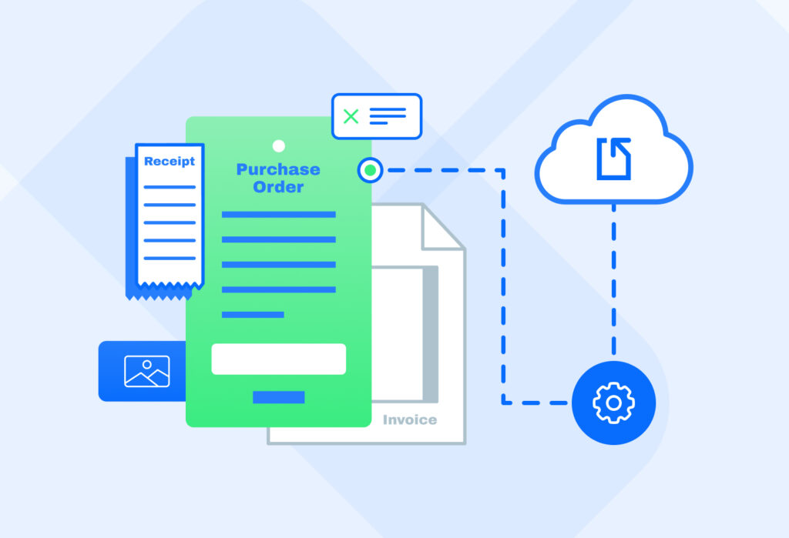

OCR
🔥 Parse thousands of documents for less than 1$
Parsing digital artefacts to extract text and useful information has undergone a dramatic transformation over the last years. Extracting information from sources challenging to interpret - like hand-written notes, tables or equations in scientific papers - has been largely solved, and the same time the cost for running state-of-the-art models has been dropping ↘️
Mistral currently leads the pack with the best OCR solution while the latest frontier models like Claude, Gemini and GPT4o are not far behind and at the same time their “mini” equivalents are both performant and cost effective. The latter has also been replicated in the open source domain with OlmOCR, a distilled GPT4o that performs and costs similar to GPT4o mini 👌
Distillation ⚗️ still stands out as the go to way to further reduce costs by using data generated from a frontier model to train a smaller that performs as well in your domain, similar to how OlmOCR was trained. Finally, human in the loop 🔁 workflows can help you both verify your solution and improve it over time. If you have an OCR use case and need help, feel free to drop us a message ✉️
